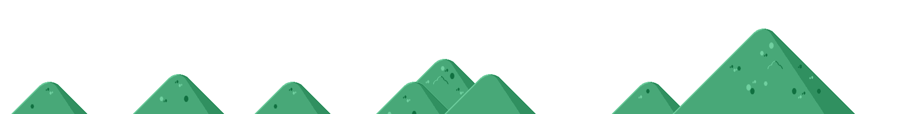
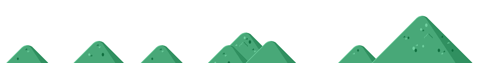

I'm Steven Young
Animal Laboratory Technician
and Web Developer


I graduated from California State Polytechnic University of Pomona in 2020 with a degree in Animal Science. I also minored in Microbiology, but was forced to graduate instead of finishing due to Covid Impact of 2020. I am a Animal Care Technician II at Zai Laboratory(US) and am studying to be a Full Stack Webdeveloper. Unfortunately, Zai Laboratory US will cease production by October 31,2022.
Mice: Pria Sampling, IP injections, Footpad Injections, Ear Tagging, Ear Notching
Dogs: IV, IM, and subcutaneous injections. IV cathether placement
Cats: IV, IM, and subcutaneous injections. IV cathether placement
Other Skills: PCR, Western Blot, Gel Electrophoresis, Minimal knowledge in Flow Cytometry, etc
I have worked with a wide amount of animals in laboratory and field settings. List includes; Mice, Rats, Jerboas, Spiny Mice, Non-Human Primates, Treeshrews, Frogs, Dogs, Cats, Avians, Horses, Cows, Sheep, Goats, and Swine
I developed and made project workflows and tasks for PI's to follow with softwares such as Softmouse and Study log. I was in charge of maintaining the database and records of all breeding schemes and projects. Organ harvesting, DNA immunizations, Dosing was done as requested. Other tasks I was in charge in was basic Animal Husbandry on the mice colony, restocking, ordering supplies, developing good relationship with vendors.
Perform Routine animal husbandry, veterinary treatment in consultation with the veterinarian and perform euthanasia as requested following AVMA and IACUC approved guidelines. Maintain accurate and complete records, but not limited to: animal health reports, medical, breeding, inventory, etc. Collect and prepare specimens and samples for in-house and outside laboratory analysis.
Listing and Buyers Agent. I have worked with many clients in all parts of real estate including leasing clients. Closed deals with technology platforms such as OPCity. Conducting open houses and showings in a professional manner every weekend.
I conducted inital pet examinations with clients. Maintaining and keeping accurate logs and animal care records. Setting up surgery equipment, assisting with anesthesia , monitoring equipment during operations, and sanitizing area post-surgery.